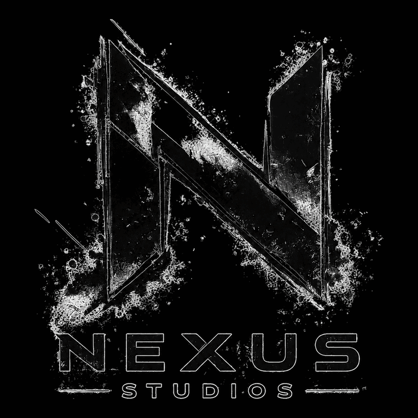
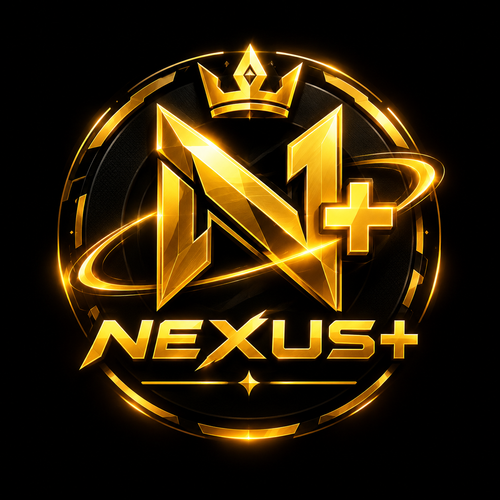
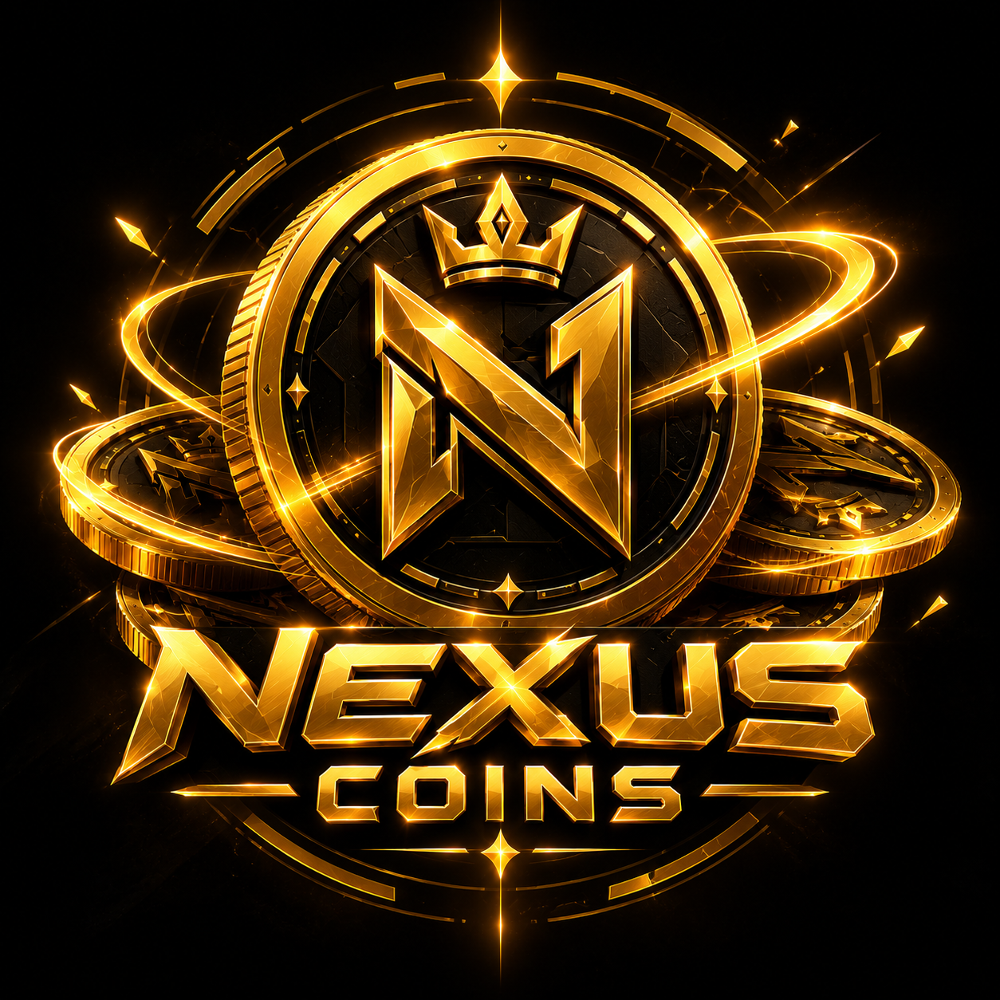
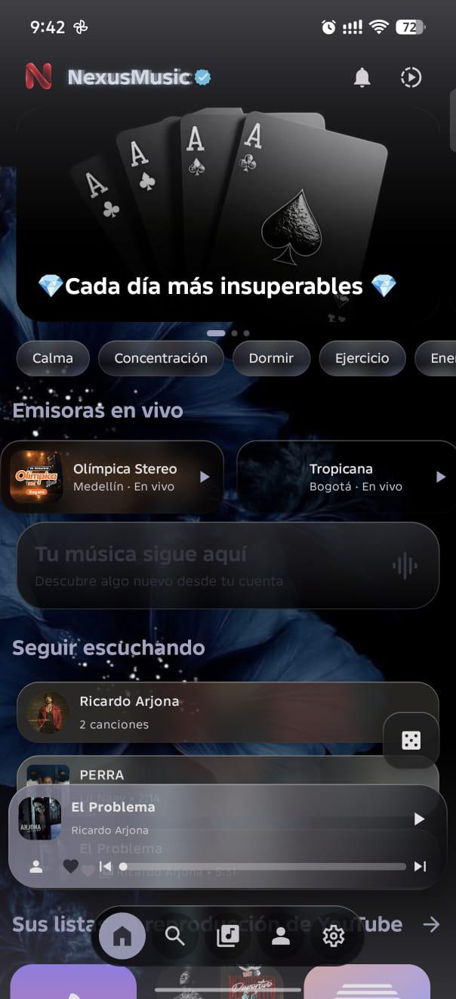
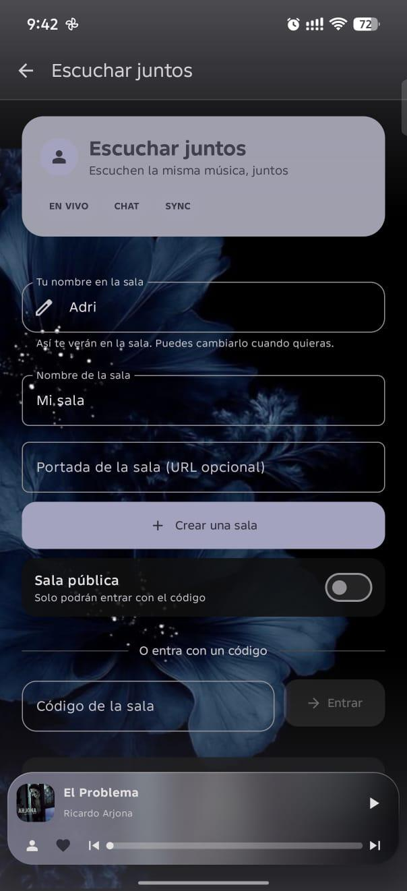
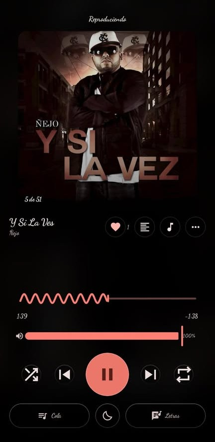
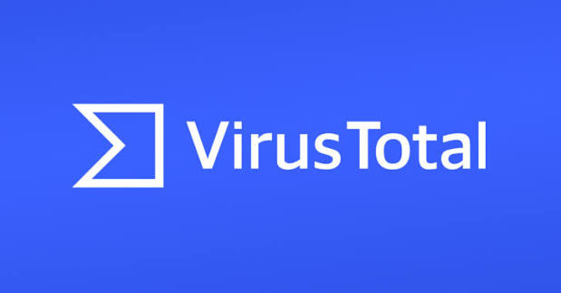

Todo tu YouTube Music, sin nada que no pediste
Suena de verdad en segundo plano, se descarga para escuchar sin datos y se comparte en una sala con alguien más, en tiempo real. Sin anuncios.
— — —
Cambia con cada versión nueva: no te preocupes si no coincide con una anterior, compárala solo con la que acabas de descargar.

Nexus Forge
NexusMusic forma parte de la vitrina de proyectos de Nexus Forge. Son los propietarios y desarrolladores, así que la app se mantiene gratis, sin anuncios y sin membresias.
Hecha para escucharse todos los días
Usa la misma música que ya tienes en tu cuenta, con una interfaz propia. Nada de anuncios, nada de pantallas que no pediste.
Segundo plano real
Sigue sonando al bloquear el teléfono, cambiar de app o ir manejando, con controles en la pantalla de bloqueo.
Salas para escuchar juntos
Creas una sala, pasas el código y los dos oyen lo mismo al mismo tiempo: pausa, cambia de canción o busca sin salir. Con chat y foto de perfil.
Sin conexión
Descarga lo que quieras y escúchalo sin datos ni wifi, con la misma calidad y sin cortes.
Tu biblioteca completa
Canciones, álbumes, artistas, playlists, estados de ánimo y géneros: lo que ya tienes en YouTube Music, con buscador propio.
Radio y modos de ánimo
Emisoras en vivo y modos como Calma, Concentración o Energía, para cuando no quieres armar tú la lista.
Letras, con descarga
Letra sincronizada cuando existe, con varios proveedores y la opción de bajarla para verla después.
Privada por diseño
Sin cuentas, sin correos y sin rastreadores. Las estadísticas son anónimas y se apagan desde la app cuando quieras.
¿Por qué existe?
Nació como un cliente alternativo para escuchar la misma música de siempre sin las interrupciones ni las pantallas de más que trae la app oficial en su versión gratuita.
Actualizaciones
Cada versión nueva se publica primero en GitHub Releases, con su propio hash SHA-256 y, cuando corresponde, su reporte de VirusTotal para que lo compruebes vos mismo antes de instalar.
Compatibilidad
Android 7.0 en adelante. No requiere Play Services para lo básico, y el APK se instala como cualquier app fuera de la tienda (activando "orígenes desconocidos" una sola vez).
Código visible
El repositorio es de solo lectura: podés revisar el código para confirmar qué hace la app antes de instalarla, aunque no está pensado para forks ni redistribución.
Hazla más tuya
La app y la web se personalizan a fondo. Con Nexus+ o con Nexus Coins — vos eliges el camino.

Nexus+
Personalización avanzada en la app y en la web Nexus Forge: temas exclusivos, iconos, portadas de reproductor y ajustes que no están disponibles de otra forma. No quita ningún anuncio — acá nunca los hubo — es pura personalización.
- Temas y colores exclusivos
- Iconos y portadas de reproductor a medida
- Ajustes que no están en ningún otro lado

Nexus Coins
¿Prefieres no suscribirte? Con Nexus Coins desbloqueas esa misma personalización de a poco, ganándolas o consiguiéndolas dentro del ecosistema de Nexus Forge. Mismo resultado, otro camino.
- La misma personalización, sin suscripción
- Se consiguen usando el ecosistema Nexus Forge
- Vas armando tu progreso a tu ritmo
En qué se diferencia de lo que ya conocés
Una foto rápida frente a las apps oficiales, en su versión gratuita. No son marcas afiliadas a NexusMusic — es solo una comparación de funciones.
| Función | NexusMusic | YouTube Music (free) | Spotify (free) |
|---|---|---|---|
| Sin anuncios | Sí | No | No |
| Reproducción en segundo plano | Sí | Limitada | Limitada |
| Descargas sin conexión | Sí | Requiere Premium | Requiere Premium |
| Escuchar juntos en tiempo real | Sí | No | No |
| Letras sincronizadas | Sí | Sí | Sí |
| Cuenta obligatoria | No | Sí | Sí |
| Costo | Gratis | Gratis con anuncios | Gratis con anuncios |
| Característica | NexusMusic | OpenYTMusic | Metrolist |
|---|---|---|---|
| Núcleo del reproductor | |||
| Android | Sí | Sí | Sí |
| Cliente de YouTube Music | Sí | Sí | Sí |
| Reproducción en segundo plano | Sí | Sí | Sí |
| Descargas offline | Sí | Sí | Sí |
| Cola / biblioteca | Sí | Sí | Sí |
| Letras sincronizadas | Sí | Sí | Sí |
| Cuenta y nube | |||
| Login propio | Nexus Forge | No | No |
| Login con YouTube Music | Sí | Parcial | Sí |
| Biblioteca en la nube propia | Sí | No | — |
| Sincronización entre dispositivos | Sí, con Nexus | No | Sí, con YTM |
| Comunidad y social | |||
| Comentarios en canciones | Sí | No | No |
| Responder comentarios | Sí | No | No |
| Perfil social | Sí | No | No |
| Seguir artistas dentro de Nexus | Sí | No | No |
| Salas y escucha compartida | |||
| Escuchar juntos (Listen Together) | Sí | Sí | Sí |
| Chat en salas | Sí | Sí | No destacado en su documentación |
| Foto de perfil en la sala | Sí | Sí | No |
| Búsqueda dentro de la sala | Sí | Sí | No |
| Personalización visual | |||
| Temas personalizados | Sí | Sí | Sí |
| Fondo personalizado | Sí | No | No |
| Color dinámico | Sí | Sí | Sí, +19 paletas |
| Motor de audio | |||
| Ecualizador | Sí | No | Sí |
| Control de velocidad / tempo | Sí | No | Sí |
| Control de tono / pitch | Sí | No | Sí |
| Saltar silencios | Sí | No | Sí |
| Normalización de audio | Sí | No | Sí |
| Crossfade | Sí | No | Sí |
| Sleep timer | Sí | No | Sí |
| Extras | |||
| Widget de inicio | Sí | No | Sí |
| Importar playlists | Sí | No | Sí |
| Importar por enlace | Sí | No | Parcial |
| Radio / modos de ánimo | Sí | No | Parcial |
| Importación entre plataformas | |||
| Spotify → Nexus | Sí | No | Parcial |
| YouTube Music → Nexus | Sí | No | Nativo |
| SoundCloud → Nexus | Sí | No | No |
| Guardar de NexusMusic a YT Music | Sí | No | — |
| Premium | |||
| Nexus+ / Nexus Coins | Sí | No | No |
| Transparencia | |||
| Sin anuncios | Sí | Sí | Sí |
| Sin rastreadores | Declarado | Declarado | Código abierto |
| Código abierto | No | Parcial | Sí |
| Código visible | Sí, lectura | — | Sí, completo |
| El proyecto | |||
| Proyecto empresarial | Nexus Studios | Sin datos claros | Comunidad / open source |
| Ecosistema propio | Sí, Nexus Forge | No | No |
| Red social propia | Sí | No | No |
| Desarrollo | Activo, según Nexus | Activo, según su web | En mantenimiento |
Qué trae esta versión
Lo que cambió, contado por quien lo hizo.
Las barras de título, la píldora de abajo, los avisos y las hojas son translúcidos: el contenido se adivina por debajo, con un canto de luz y un brillo del color de la portada arriba y abajo. Se apaga en Ajustes → Apariencia si prefieres el negro liso.
Al tocar tu ficha eliges una foto del teléfono y el otro te ve la cara en el círculo de la sala. Se recorta y se encoge antes de salir, no se guarda en ningún servidor y se quita cuando quieras.
Nexus Studios. Propietario. Gracias a todos ustedes por confiar en nosotros y usar a NexusMusic.
Nexus Studios. Propietario. Se agrega login a la plataforma y guardado de música en la nube, más comentarios en las canciones y la opción de suscribirte a los artistas.
El nombre y la identidad de la app cambiaron para reflejar su nuevo hogar en Nexus Forge.
Podés importar tus temas de SoundCloud por URL, y de Spotify iniciando sesión con tu cuenta.
Se pinta con lo que estás escuchando



Interfaz en Material 3 con tema oscuro y color de acento tomado de la portada de la canción: la app se pinta sola con lo que estás oyendo.
Este APK fue escaneado en VirusTotal: 0 de 67 motores antivirus lo marcaron como malicioso. Es el mismo archivo que puedes comprobar con el SHA-256 de arriba, que cambia en cada actualización.


Lo que más preguntan
¿Es gratis?
Sí, sin anuncios y sin compras dentro de la app. Es un proyecto personal: si te sirve, compartirlo ya es suficiente.
¿Necesito cuenta de YouTube Music?
Puedes usarla sin entrar, y si entras con tu cuenta aparecen tus playlists, tus "me gusta" y tu historial, igual que en la app oficial.
¿Qué es "escuchar juntos"?
Una sala con código: quien la crea la comparte y los dos oyen exactamente lo mismo al mismo tiempo. Si uno pausa, cambia de canción o se adelanta, al otro le pasa igual. Trae chat, foto de perfil y el buscador funciona dentro de la sala.
¿Quién está detrás?
Un Studio al que le gusta la música. Nexus Forge (Nexus Studios) hizo el proyecto: le dio un lugar en su plataforma y creó esta web secundaria. NexusMusic no está afiliado ni respaldado por YouTube ni por Google LLC.
¿Cómo sé que el APK es seguro?
Cada versión se sube a VirusTotal antes de publicarse; el enlace al reporte completo está en la sección de interfaz, arriba, junto al hash SHA-256 para que compares el archivo que descargaste.
¿Qué diferencia hay entre Nexus+ y Nexus Coins?
El mismo destino, dos caminos: Nexus+ es una membresía que desbloquea la personalización avanzada de una vez, y Nexus Coins la desbloquea de a poco sin suscribirte. Ninguno de los dos quita anuncios, porque acá nunca los hubo.
Llévatela contigo
Descarga el APK, instálalo y listo. No pide cuentas ni permisos que no use.